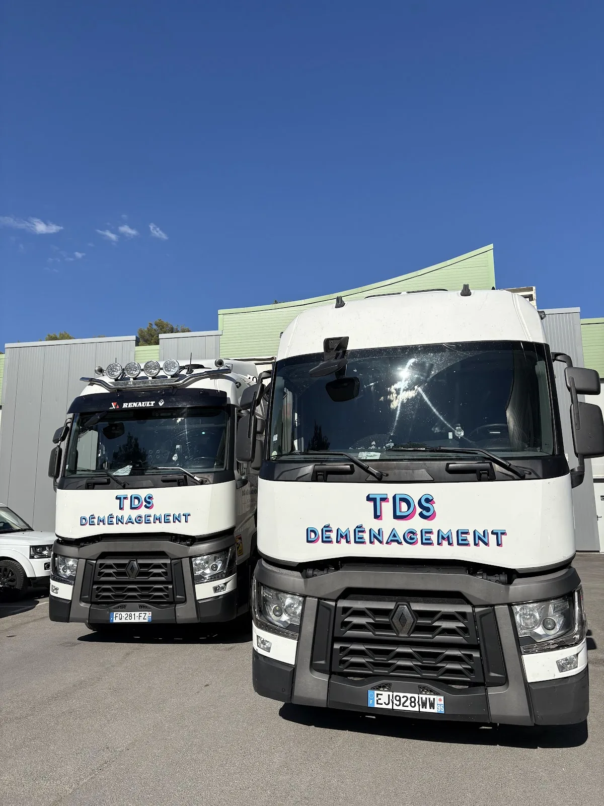

Une entreprise familiale,
des moyens de groupe.
Plus de 30 ans d’expérience, trois agences françaises et des moyens dédiés au déménagement : TDS associe organisation locale et capacité logistique.

Du terrain, du matériel, du suivi.
TDS présente une organisation familiale et indépendante, avec une agence historique dans le Nord, une implantation dans le Var et une agence toulousaine ouverte en 2022. Chaque agence dispose de moyens de transport et de solutions de stockage.
Une estimation basée sur le projet réel
TDS propose une estimation à domicile ou en visioconférence. Le devis prend en compte le volume, la distance, les accès au départ et à l’arrivée, la formule retenue et les particularités du mobilier. L’objectif est de définir les moyens nécessaires avant le jour J.
Des équipements dédiés
La société indique disposer d’une flotte d’une cinquantaine de camions, ainsi que de six monte-meubles et échelles électriques, en complément de ses solutions de stockage.
Une logique de métier
TDS met en avant la formation continue de ses déménageurs, l’indépendance de l’entreprise et son adhésion à la Chambre Syndicale du Déménagement.
Parlons de votre déménagement
Décrivez votre départ, votre arrivée et vos contraintes. TDS vous aide à cadrer la bonne formule et les moyens nécessaires.